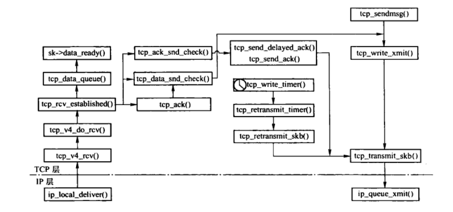
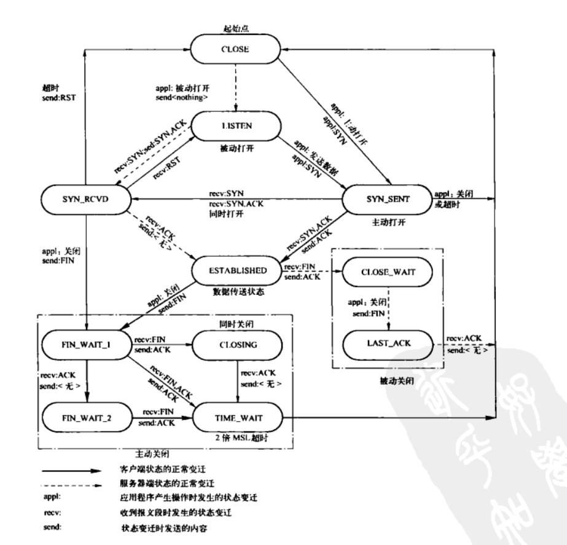
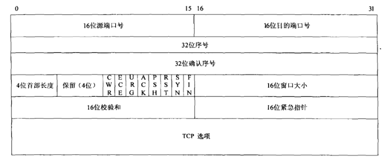
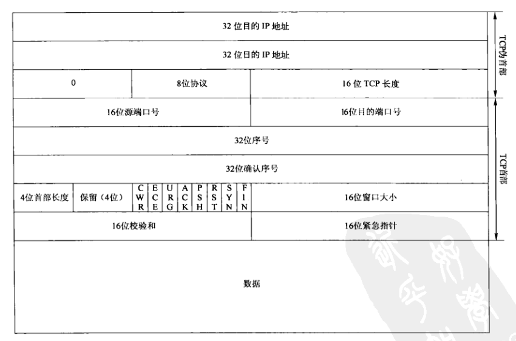
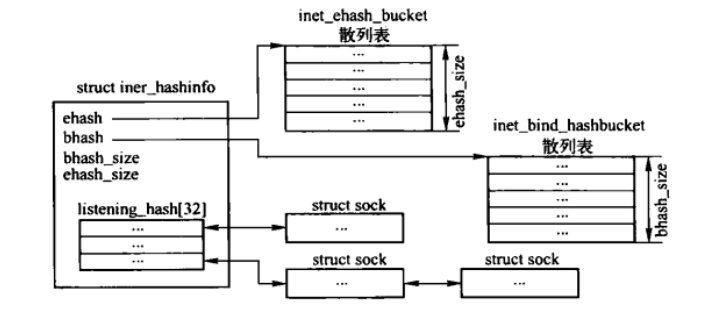
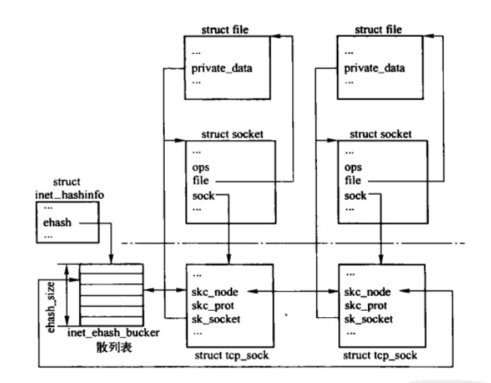
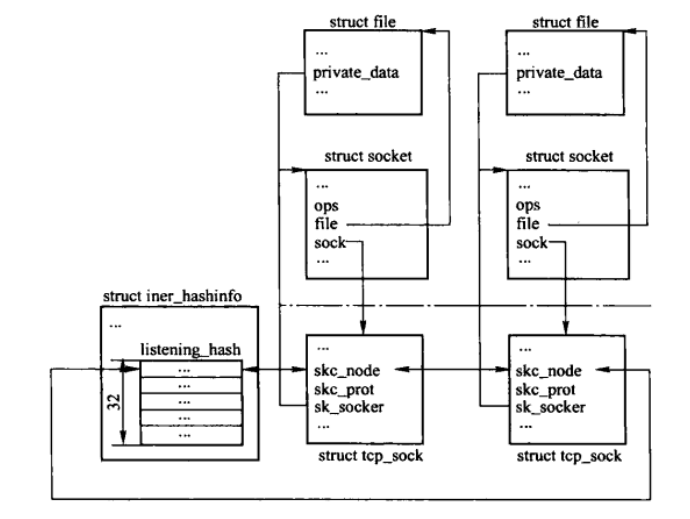

TCP: 传输控制协议
Table of Contents

Figure 1: TCP函数调用关系
1. 系统参数
- sockmaxconn
- 服务段侦听时，允许每个套接口链接队列长度的最大值。默认值为128。
- tcp_abc
- 标识是否启用ABC，（RFC3465中定义ABC，根据接收到的ACK确认字节数控制拥塞窗口增长的方法）。
- 0 (默认)
- 禁用ABC,每次接收ACK都增长拥塞窗口
- 1
- 累计确认了一个全尺寸的段后在会递增拥塞窗口
- 2
- 如果接收方启用了延时确认，累计确认两个全尺寸段后才递增拥塞窗口
- tcp_abort_on_overflow
- 当进程太忙而不能接收新的连接时，是否主动向对方发送RST段。默认为0。
- tcp_adv_win_scale
在开启了通过调节接收窗口来进行流量控制的情况下，计算调整接收缓存和接收窗口时，对用来计算接收缓存的参数进行微调。默认值为2。
//此函数对space值进行微调。 static inline int tcp_win_from_space(int space) { return sysctl_tcp_adv_win_scale<=0 ? (space>>(-sysctl_tcp_adv_win_scale)) : space - (space>>sysctl_tcp_adv_win_scale); }
- tcp_app_win
- 为拥英诚寻缓存保留 max(window/2tcp_app_win, mss)大小的窗口。为0时表示不需要缓冲。默认值为31。
- tcp_allowed_congestion_control
- 所有可使用的拥塞控制算法名称的列表。
- tcp_available_congestion_control
- 所有现有已经注册且有效的拥塞控制算法名称的列表。
- tcp_congestion_control
- 为新连接设置的拥塞控制算法。
- tcp_base_mss
- 如果启用路径MTU发现，则用它来作为较小值初始化MSS。默认为512。
- tcp_dma_copybreak
- 启用CONFIG_NET_DMA后，TCP套接口读取数据时启用DMA复制引擎的下限。默认4096B。
- tcp_dsack
- 表示是否支持TCP发送确认段中SACK选项存在D-SACK(duplicate-SACK)。默认值为1（true）。
- tcp_ecn
- 表示是否启用TCP的显式拥塞通知功能。默认为1。
- tcp_fack
标志是否启用FACK拥塞避免与快速重传功能。默认为1。只有启用tcp_sack时有效。
FACK（提前确认）是基于SACK选项的一种特殊的算法，使用SACk提供的信息在恢复期间对进入网络的数据进行更准确的控制。FACK吧拥塞控制与数据恢复分开，从而获得了对进入网络的数据的更准确的控制。主要思路是吧选择确认的最大序号作为标志，所有以前没有经过选择确认的段都丢失了。
- tcp_fin_timeout
对于本端断开的套接口连接，确定TCP保持在FIN_WAIT_2状态的时间。默认值为60s。
对端可能会断开链接但一直不终止连接，或者进程不正常结束。需要防止TCP长时间保持在FIN_WAIT_2状态。对于负载很重的Web服务器，会耗费大量内存。
- tcp_frto
- 是否启用F-RTO。默认值为0。 启用F-RTO，会启用优化后的TCP重传算法。在无线环境中很有效，因为通常是由于无线电干扰而不是由于路由器拥塞而导致随机丢包。
- tcp_keepalive_intvl
- 保活探测消息的发送频率。默认值为75s。
- tcp_keepalive_probes
- TCP发送保活探测消息以确定连接是否断开的次数。默认值为9次。（只有设置了SO_KEEPALIVE套接口选项后才会发送保活探测消息）
- tcp_keepalive_time
- 在TCP保活打开时，最后一次数据交换到TCP发送第一个保活探测消息的时间，即允许的持续空闲时间，默认值为7200s。
- tcp_low_latency
- 启用时，TCP段的接收在进程的上下文中进行；关闭时，如果用户进程正在读取数据，此时复制数据到用户空间可以在软中断中进行，从而能够提高TCP/IP协议栈的吞吐量。默认为0。（一般情况下该开没有多少意义）
- tcp_max_orphans
系统最多能处理不属于任何进程的TCP套接口（即孤儿套接口）的数量，默认16384。
假如超过这个数量，则会复位孤儿套接口，并显示警告信息，该限制主要为了抵御简单的DoS攻击。每个孤儿套接口会消耗64KB的内存。
- tcp_max_syn_backlog
- 系统可同时存在未完成三次握手的SYN请求的最大数目。默认值：大于128MB内存为1024，否则为128。
- tcp_max_tw_buckets
可保持在TIME-WAIT状态的套接口的最大数目。默认值为18000。
如果超过这个数，新迁移到TIME-WAIT状态的套接口将立刻被关闭和释放并打印警告。该限制仅仅是为了防止简单的DoS攻击，不能过分依赖该值。如果网络实际需要大于该值，则应该增加该值。
- tcp_mem
- 3个整数，分别对应于low、pressure、high，初始值在系统启动时根据系统内存数量计算。
- low
- 当TCP使用的内存页面低于该值时，TCP不考虑释放内存，且分配总能成功
- pressure
- 当TCP使用的内存页面数量超过该值时，TCP试图稳定其使用内存，及就会进入告警状态。在告警状态下，分配缓存时会根据参数来决定本次分配是否成功。直到内存消耗低于low值时退出pressure状态
- high
- 对缓冲区可用大小的硬性限制线，一旦已分配的缓冲区总大小超出该值，会根据情况对发送和接收缓存做具体确认。（tcp_out_of_resources()）
- tcp_moderate_rcvbuf
- 是否启动自动调节接收缓冲区大小。默认为1。 启用时，TCP会自动调整接收缓冲区的大小，一次进行流量控制，在满足缓冲区大小不超过系统参数tcp_rmem[2](high)的条件下，提供最大吞吐量。
- tcp_mtu_probing
- 是否启用路径MTU发现。
- 0
- 禁止
- 1
- 通常禁止，但会在探测到ICMP黑洞时启用
- 2
- 启用，用tcp_base_mss()初始化MSS。
- tcp_no_metrics_save
- 标识是否在TCP关闭时将连接的相关变量保存到路由缓存中。默认值为0。 通常TCP关闭是会保存相关变量（RTAX_RTT、RTAX_RTTVAR、RTAX_SSTHRESH等）到路由缓存中，用于初始化新建的连接。
- tcp_orphan_retries
- 在确认连接一场，并关闭本端TCP连接之前，最多重试的次数。默认值7次，相当于50s~16min，跟RTO有关系。如果系统是负载较重的Web服务器，则需要降低该值，否则可能消耗大量的资源。
- tcp_reordering
- 在不支持SACK时，为由于连接受到重复确认而进入快速恢复阶段的重复确认数阈值。在支持SACK时，在没有确定丢失包的情况下，是TCP流中可以重排序的数据段数。默认值为3个。如果降低该值，可能会导致网络性能变差。
- tcp_retrans_collapse
- 为兼容一些打印机设置的选项。
- tcp_retries1
- 重传次数超过此值时，可能遇到黑洞，因此要检测PMTU是否有效。并清楚缓存在传输控制块中的目的路由缓存项，在下次重传时会重新进行路由选择。默认为3，根据RTO的值大约在 3s～8min。
- tcp_retries2
- 持续定时器周期性发送TCP段或超时重传时，在确定断开TCP链接之前最多的尝试次数。默认值15次，根据RTO的值，大约在13~30min。 RFC1122规定，该值必须大于100s。
- tcp_rfc1337
- 可以预防在RFC1337中描述的TIME-WAIT assassination hazards问题。默认值为0，内核将丢弃那些发往TIME-WAIT状态TCP套接口的RST段。
- tcp_rmem
- 3个整数。默认为 4096、87380、174760。分别对应min、default、max。
- min
- 接收队列中报文数据总长度（sock结构的sk_rmem_alloc）的上限
- default
- 接收缓冲区长度上限的初始值，用来初始化sock结构的成员sk_rcvbuf。
- max
- 接收缓冲区长度上限的最大值，用来调整sock结构的成员sk_rcvbuf。
- tcp_sack
是否启用选择性确认SACKS选项。默认为1。
SACK可以用来查找特定的丢失的段，一次有助于快速回复状态。同时，启用SACK,接收方可以有选择的应答接收的乱序段，可以帮助发送方确定丢失的段，进而发送方只需发送丢失的段，以提高性能。对于广域网通信来说应当启用该选项。注意开启选项会增加CPU负荷。
- tcp_stdurg
- 是否使用TCP紧急指针字段中主机请求解释功能。默认值为0。
- tcp_slow_start_after_idle
发送方闲置后，是否启用慢启动算法。
拥塞窗口控制相应连接在网络中的TCP段数。当发送方长时间无响应或者由于应用闲置导致拥塞窗口无效时，拥塞窗口不能反应网络的当前状况，因此RFC2861为TCP拥塞控制算法提供了一种修正方法。
- 0
- 支持RFC2961中的算法，则在闲置期后拥塞窗口超时而失效，闲置期定义为当前RTO估计值
- 1 默认
- 不支持RFC2861中的算法，则拥塞窗口不因为闲置而产生超时。
- tcp_syn_retries
- TCP建立连接时最多尝试发送SYN链接请求的次数。不能大于255，默认5,大约180s。
- tcp_synack_retries
- 被动连接端在放弃连接前，最多发送SYN+ACK段的次数。不能大于255,默认5,大约180s。
- tcp_syncookies
标识是否启用SYN cookies功能。默认值为0。
在TCP建立连接过程中，服务端在接收到客户端的SYN请求后，需回复SYN+ACK包给客户端，然后客户端在发送ACK包给服务器。通常服务器的初始序列号是按一定的规则计算得到的，或者采用随机数。在SYN coolies中，服务器的初始序列号是通过对客户端的IP地址、客户端端口、服务器IP地址和服务器端口以及其他一些安全数值等进行hash运算并加密后得到的，成为cookie。当服务器遭受SYN攻击使得backlog队列满时，服务器并不拒绝新的SYN请求，而是回复cookie给客户端，如果收到客户端的ACK包，服务器将客户端的ACK序列号减去1得到的值，与上述要素做hash运算，然后看看是否等于该cookie值，如果相等则直接完成三次握手。注意：此时并不用查看此连接是否属于backlog队列。
注意：该选项千万不能用于那些 没有受到攻击的高负载服务器 ，如果在日志中出现synflood消息，但世纪没有受到synflood攻击，而是由于合法用户的连接负载过高的原因，则应调整其他参数来提高服务器性能。参见 tcp_max_syn_backlog、tcp_synack_retries、tcp_abort_on_overflow系统参数。
syncookie严重违背了TCP协议，不允许使用TCP扩展，可能对某些服务造成严重的性能影响（如SMTP转发），但是对于防御syn-flood攻击很有效。
- tcp_timestamps
是否启用TCP时间戳选项。默认值为1。
时间戳可以使连接的两端很方便的测量RTT,同时还可以避免序列号的回绕，因此为了实现更好的性能应该启用该选项。
- tcp_tso_win_divisor
单个TSO段可消耗拥塞窗口比例。默认值为3。
该参数只有在网络设备支持GSO特性时才会真正起作用，其值应当大于3。
- tcp_tw_recycle
- 是否快速使套接口从TIME-WAIT状态迁移到CLOSE状态。
- 0
- 套接口在TIME-WAIT状态等待60s
- 1
- 能够更快使套接口从TIME-WAIT状态迁移到CLOSE状态，完成套接口的关闭。
- tcp_tw_reuse
- 是否允许处于TIME-WAIT状态的套接口使用的端口用于新的TCP套接口。默认值为0。
- tcp_window_scaling
是否起启用TCP窗口扩大因子选项，默认值为1。
通常TCP允许窗口尺寸为65535B，但对于带宽很高的网络而言这个值可能还是太小，此时如果启用了该选项，可是TCP滑动窗口大小增大数个数量级，从而提高数据传输的能力，参见RFC1323。
- tcp_wmem
- 3个整数，默认值 4KB,16KB,128KB， 分别对应min, default, max。
- min
- 发送队列中段数据总长度（sock结构的sk_wmen_queued）的上限
- default
- 发送缓冲区的长度上限的初始值， 用来初始化sock结构的成员sk_sndbuf
- max
- 发送缓冲区的长度上限的最大值， 用来调整sock结构的成员sk_sndbuf
- tcp_workaround_signed_windows
- 标识在没有启用窗口扩大因子选项时，是否使用初始值不超过32767的TCP窗口，默认值为0（不启用）。 因为有些系统实现的协议站在TCP窗口大于32767时，存在bug,因此可以启用参数来规避这个bug。
2. TCP的inet_protowsw实例
/* Upon startup we insert all the elements in inetsw_array[] into * the linked list inetsw. */ static struct inet_protosw inetsw_array[] = { { .type = SOCK_STREAM, //套接口类型为STREAM .protocol = IPPROTO_TCP, //传输层协议为TCP协议 .prot = &tcp_prot, //套接口传输层接口为tcp_prot .ops = &inet_stream_ops, //套接口层接口为inet_stream_ops .capability = -1, //表示创建STREAM类型套接口无需进行能力的检验 .no_check = 0, //表示始终需要进行校验和操作 .flags = INET_PROTOSW_PERMANENT | //标识TCP模块在系统运行过程中不能被替换或卸载 INET_PROTOSW_ICSK, //TCP套接口是面向连接的套接口，用于在创建传输控制块时初始化is_icsk成员。 }, //...... };
3. TCP的net_protocol结构
TCP的net_protocol结构实例是tcp_protocol，由于TCP支持差错处理以及TSO，因此不仅定义了TCP接收函数，还定义了差错处理以及TSO分段处理函数等。
static struct net_protocol tcp_protocol = { .handler = tcp_v4_rcv, //TCP协议接收处理TCP段的函数 .err_handler = tcp_v4_err, //TCP协议的错误处理函数，ICMP模块接收到差错报后，如果是TCP协议，则调用该函数。 .gso_send_check = tcp_v4_gso_send_check, .gso_segment = tcp_tso_segment, .no_policy = 1, };
4. TCP传输控制块
TCP传输控制块在TCP整个过程中起着核心作用，包括建立连接、数据的传输、拥塞控制以及连接终止。在TCP连接的整个过程中，会分别使用一下三种类型的TCP传输控制块。
- tcp_request_sock传输控制块，在建立连接过程中使用，存在的时间是比较短的，可以称之为连接请求块。
- tcp_sock传输控制块，在连接建立之后终止之前使用，TCP状态为ESTABLISHED。
- tcp_timewait_sock传输控制块，在终止连接过程中使用。
本节中只描述第二种传输控制块。
4.1. inet_connection_sock结构
该结构是所有面向连接传输控制块的表示，在inet_sock结构的基础上，增加了有关进行连接、确认和重传等成员。
struct inet_connection_sock { /* inet_sock结构必须放在最前面 */ struct inet_sock icsk_inet; /* TCP传输层接收到客户端的连接请求后，会创建一个客户端套接口存放到isk_accept_queue 容器中，等待应用程序调用 accept() 进行读取*/ struct request_sock_queue icsk_accept_queue; //指向与之绑定的本地端口信息，在绑定过程中被设置。 struct inet_bind_bucket *icsk_bind_hash; /* 如果TCP段在指定时间内没有收到ACK，则认为发送失败，而进行重传的超时时间。 通常是 jiffies+isk_rto 。*/ unsigned long icsk_timeout; /* 通过icsk_pending来区分是重传定时器还是持续定时器。 在超时时间内没有接收到相应的ACK段会发生重传， 在连接对方通告接收窗口为0时会启动持续定时器。 */ struct timer_list icsk_retransmit_timer; //用于延迟发送ACK段的定时器 struct timer_list icsk_delack_timer; /* 超时重传的时间，初始值为TCP_TIMEOUT_INIT,当往返时间超过此值时被认为传输失败。 需要注意：超时重传时间是根据当前网络的情况动态计算的。*/ __u32 icsk_rto; //最后一次更新的路径MTU(PMTU)。 __u32 icsk_pmtu_cookie; /* 指向拥塞控制算法的指针 */ const struct tcp_congestion_ops *icsk_ca_ops; /* TCP的操作接口集，包括IP层发送的接口、TCP层的setsockopt接口。 在tcp_v4_init_sock() 中被初始化为 ipv4_specific */ const struct inet_connection_sock_af_ops *icsk_af_ops; //根据PMTU同步本地MSS函数指针。在tcp_v4_init_sock() 中被初始化为tcp_sync_mss()。 unsigned int (*icsk_sync_mss)(struct sock *sk, u32 pmtu); //拥塞控制状态 __u8 icsk_ca_state; //记录超时重传的次数 __u8 icsk_retransmits; //标识预定的定时器事件，只能是ICSK_TIME_RETRANS或ICSK_TIME_PROBE0。用来区分正在使用的是那个定时器 __u8 icsk_pending; //用来计算持续定时器的下一个设定值的指数退避算法指数，在传送超时时会递增。 __u8 icsk_backoff; //建立TCP连接时最多允许重试发送SYN或SYN+ACK段的次数。 __u8 icsk_syn_retries; //持续定时器或保活定时器周期性发送出去但没被确认的TCP段数目，收到ACK后清零 __u8 icsk_probes_out; //IP首部中选项部分的长度 __u16 icsk_ext_hdr_len; struct { /* 标识当前需发送确认的紧急程度和状态。在数据从内核空间复制到用户空间时 会检测该状态，如果需要则立即发送确认；在计算rcv_mss时，会根据情况调整此状态。 */ __u8 pending; /* 标识在快速发送确认模式中，可以快速发送ACK段的数量。 与pingpong一同作为判断是否在快速发送确认模式下的条件，如果要延时发送确认， 则必须在延时发送确认模式下。*/ __u8 quick; /* 标识启用或禁用快速确认模式 0 ： 不延时ACK段的发送，而是进行快速发送 1 ： 延时发送ACK */ __u8 pingpong; /* 软中断和用户进程不能同时占有锁定套接口，如果套接口被用户进程锁定，而此时 延时ACK定时器被触发，此时将blocked设置为1，等有机会立即发送ACK。 */ __u8 blocked; /* 计算延时确认的估计值，在接收到TCP段时会根据本次与上次接收的时间间隔来调整 该值，在设置延时确认定时器时也会根据条件设置该值 */ __u32 ato; //当前的延时确认时间，超时后发送ACK unsigned long timeout; //最近一次接收到数据包的时间 __u32 lrcvtime; //最后一个接收到的段的长度，用来计算rcv_mss。 __u16 last_seg_size; //最近接收到段计算出的MSS，主要用来确定是否执行延时确认。 __u16 rcv_mss; } icsk_ack; //延时确认控制数据块 struct { int enabled; //是否启用路径MTU发现 int search_high; //路径MTU发现区间的上限 int search_low; //路径MTU发现区间的下限 /* 为当前路径MTU探测段的长度，也用于判断路径MTU探测是否完成， 无论成功还是失败， 路径MTU探测完成后都将初始化为0。*/ int probe_size; } icsk_mtup; //路径MTU发现的控制数据块，在tcp_mtup_init()中被初始化。 //存储各种有关TCP拥塞控制算法的私有参数。 u32 icsk_ca_priv[16]; #define ICSK_CA_PRIV_SIZE (16 * sizeof(u32)) };
4.2. inet_connection_sock_af_ops结构
封装了一组与传输层相关的操作集，包括向网络层发送的接口、传输层的setsockopt接口等。TCP中的实例为ipv4_specific。
struct inet_connection_sock_af_ops { //从传输层想网络层传递的接口，TCP中设置为ip_queue_xmit() int (*queue_xmit)(struct sk_buff *skb, int ipfragok); //计算传输层首部校验和函数，TCP中初始化为TCP_v4_send_check() void (*send_check)(struct sock *sk, int len, struct sk_buff *skb); //如果此传输控制块还没有路由缓存项，TCP中设置为inet_sk_rebuild_header()。 int (*rebuild_header)(struct sock *sk); //处理连接请求接口，TCP中为tcp_v4_conn_request() int (*conn_request)(struct sock *sk, struct sk_buff *skb); struct sock *(*syn_recv_sock)(struct sock *sk, struct sk_buff *skb, struct request_sock *req, struct dst_entry *dst); //在启用tw_recycle的情况下，关闭套接口时，记录相关时间戳信息到对端信息块管理中。 int (*remember_stamp)(struct sock *sk); //IPv4为IP首部的长度 u16 net_header_len; //IP套接口地址长度 u16 sockaddr_len; int (*setsockopt)(struct sock *sk, int level, int optname, char __user *optval, int optlen); int (*getsockopt)(struct sock *sk, int level, int optname, char __user *optval, int __user *optlen); int (*compat_setsockopt)(struct sock *sk, int level, int optname, char __user *optval, int optlen); int (*compat_getsockopt)(struct sock *sk, int level, int optname, char __user *optval, int __user *optlen); //将IP套接口地址结构中的地址信息复制到传输控制块中，TCP中为inet_csk_addr2-sockaddr()，实际上该接口并未使用。 void (*addr2sockaddr)(struct sock *sk, struct sockaddr *); };
4.3. tcp_sock结构
tcp_sock结构是TCP协议的控制块，它在inet_connection_sock结构的基础上扩展了滑动窗口协议、拥塞控制算法等一些TCP专有属性。
struct tcp_sock { /* inet_connection_sock需要放在最前面 */ struct inet_connection_sock inet_conn; u16 tcp_header_len; /* tcp首部长度 */ /* 记录该套接口发送到网络设备的段长度，在不支持TSO时，等于MSS; 网卡如果支持TSO且采用TSO发送，则需要重新计算，计算方法参见tcp_current_mss() */ u16 xmit_size_goal; /* 首部预测标志，会在发送和接收SYN、更新窗口或其他恰当的时候，设置该标志。 此标志和时间戳以及序列号等，都是判断执行快速路径还是慢速路径的条件之一。*/ __be32 pred_flags; //等待接收的下一个TCP段的序号，每接收到一个TCP段后都会更新 u32 rcv_nxt; /* 等待发送的下一个TCP段的序号*/ u32 snd_nxt; /* 在输出的段中，最早一个未确认段的序号 */ u32 snd_una; /* 最近发送的小包（小于MSS的段）的最后一个字节序号，在成功发送段后， 如果报文小于MSS，即更新该字段，用来判断是否启用nalgle算法 */ u32 snd_sml; //最近一次受到ACK段的时间，用于TCP保活 u32 rcv_tstamp; //最近一次发送数据包的时间，主要用于拥塞窗口的设置 u32 lsndtime; /* 用来控制复制数据到用户进程的控制块： 包括描述用户空间缓存及其长度，prequeue队列及其占用的内存等 */ struct { /* 如果没启用tcp_low_latency,TCP段将首先缓存到此队列， 直到进程主动读取时才真正的接收到接收队列中并处理。 */ struct sk_buff_head prequeue; /* 在没启用tcp_low_latency情况下，当前正在读取TCP流的进程，如果是NULL则表示 暂时没有进程读取 */ struct task_struct *task; /* 在没启用tcp_low_latency情况下，用来存放数据的用户空间地址，在接收处理 TCP段时直接复制到用户空间*/ struct iovec *iov; //prequeue队列当前消耗的内存 int memory; //用户缓存中当前可以使用的缓存大小，由recv等系统调用的len参数初始化 int len; #ifdef CONFIG_NET_DMA //网络设备DMA相关 struct dma_chan *dma_chan; int wakeup; struct dma_pinned_list *pinned_list; dma_cookie_t dma_cookie; #endif } ucopy; /* 记录更新发送窗口的那个ACK段的序号，用来判断是否需要更新窗口。如果后续收到 的ACK段的序号大于snd_wl1，则需要更新窗口，否则无需更新 */ u32 snd_wl1; u32 snd_wnd; /* 接收方提供的接收窗口大小，即发送方发送的窗口大小 */ u32 max_window; /* 接收方通告过的最大接收窗口值 */ u32 mss_cache; /* 发送方当前有效的MSS */ /* 滑动窗口最大值，滑动窗口大小在变化过程中始终不能超出该值。 TCP建立连接时， 初始化该字段，设置为最大16位整数左移窗口扩大因子的位数，以为滑动窗口在TCP首部 中以16位表示，window_clamp太大会导致滑动窗口无法在TCP首部中表示*/ u32 window_clamp; /* 当前接收窗口大小的阈值。该字段与rcv_wnd两者配合，达到滑动窗口大小缓慢增长的效果： 其初始值为rcv_wnd，当本地套接口收到段，并满足一定条件时，会递增该字段值; 到下一次发送数据组建TCP首部时，需要通告对端当前接收窗口的大小，此时更新rcv_wnd， 而rcv_wnd的取值不能超过rcv_ssthresh的值。*/ u32 rcv_ssthresh; //重传超时发生时，在启用F-RTO情况下，用来保存待发送的下一个TCP段的序号（SND.NXT）。 u32 frto_highmark; /* 在不支持SACK时，由于连接接收到重复确认而进入快速恢复阶段的重复确认数的阈值。 在支持SACK时，没有确定丢失包的情况下，是TCP流中可以重排序的数据段数。 由相关路由缓存项中的reordering度量值或系统参数 tcp_reordering 进行初始化，更新时 会同时更新到目的路由缓存项的reordering中。*/ u8 reordering; /* 传送超时后，记录在启用F-RTO算法时，接收到ACK段的数目。 传送超时后，如果启用F-RTO算法，则进入F-RTO处理阶段，在此阶段，如果连续接收到3个对 新数据确认的ACK段，则恢复到正常模式下。 非零时，也表示在F-RTO处理阶段 */ u8 frto_counter; /* 是否启用nagle算法，Nagle算法把较小的段组装为更大的段，主要用于解决由于大量的 小包导致网络发生拥塞的问题。*/ u8 nonagle; /* 保活探测次数，最大值为127 （TCP_KEEPCNT选项）*/ u8 keepalive_probes; /* RTT 测量 */ u32 srtt; /* 平滑RTT,为了避免浮点运算，将其放大8倍后存储（time << 3）*/ u32 mdev; /* RTT平均偏差，由RTT与RTT均值偏差加权平均而得到，值越大说明RTT抖动越厉害*/ u32 mdev_max; /* 跟踪每次发送窗口内的段被全部确认过程中，RTT平均偏差的最大值，描述RTT抖动的最大范围*/ u32 rttvar; /* 平滑的RTT平均偏差，由mdev计算得到，用来计算RTO */ u32 rtt_seq; /* 记录SND.UNA。用来在计算RTO时比较SND.UNA是否已经被更新了，如果被更新，则需要同时更新rttvar。*/ /* 从发送队列发出而未得到确认TCP段的数目（SND.NXT-SND.UNA）。该值动态计算， 当有新的段发出或收到新确认段都会增加或减小该值。*/ u32 packets_out; /* 已离开主机在网络中且未确认的TCP段数。有两种情况，通过SACK确认的段和已丢失的段， 即 left_out = sacked_out + lost_out。 left_out不同于packets_out。 pakcets_out只是离开发送队列，而left_out是离开主机。 */ u32 left_out; //重传还未得到确认的TCP段数 u32 retrans_out; //存储接收到的TCP选项 struct tcp_options_received rx_opt; //拥塞控制时慢启动的阈值 u32 snd_ssthresh; u32 snd_cwnd; /* 当前拥塞窗口大小*/ /* 从上次调整拥塞窗口到目前为止，接收到的总ACK段数。如果为0，说明已经调整拥塞窗口， 且还未收到ACK段。调整后，每收到一个ACK段，该值加1。*/ u16 snd_cwnd_cnt; /* 允许的最大拥塞窗口值，初始值65535，之后在接收到SYN和ACK段时，会根据条件确定是否 从路由配置项读取信息更新该字段，最后在TCP连接复位前，将更新后的值根据算法更新回对应 路由配置项。*/ u16 snd_cwnd_clamp; /* 当应用程序限制时，记录当前从发送队列发出而未得到确认的段数，用于在检验拥塞窗口时 调节拥塞窗口，避免拥塞窗口实效。*/ u32 snd_cwnd_used; /* 记录最近一次检验拥塞窗口的时间。 在拥塞期间，接收到ACK后，会进行拥塞窗口的检验。 而在非拥塞期间，为防止由于应用程序限制而造成拥塞窗口实效，因此在成功发送段后， 如有必要也会检验拥塞窗口*/ u32 snd_cwnd_stamp; //乱序缓存队列，用来暂存接收到的乱序的TCP段。 struct sk_buff_head out_of_order_queue; u32 rcv_wnd; /* 当前接收窗口大小 */ /* 标识最早接收但未确认的段的序号，即当前接收窗口的左端。在发送ACK时，由rcv_nxt更新， 因此rcv_wup的更新通常比rcv_nxt滞后。*/ u32 rcv_wup; //已经加入到发送队列的最后一个字节的序号 u32 write_seq; /* 通常情况下标识已经真正发送出去的最后一个字节序号; 有时也可能标识期望发送出去的最后 一个字节序号，例如在启用了nagle算法后 或者 在发送持续探测段后。 */ u32 pushed_seq; //尚未从内核空间复制到用户空间的段的最前面一个字节的序号。 u32 copied_seq; /* 存储用于回复对端SACK的信息，在回复SACK时，会从中抽取出D-ACK和SACK信息， 在处理接收到乱序的段时，想这两个字段中填入相应的信息。 */ struct tcp_sack_block duplicate_sack[1]; /* D-SACK信息 */ struct tcp_sack_block selective_acks[4]; /* SACK信息*/ //存储接收到的SACK选项信息 struct tcp_sack_block recv_sack_cache[4]; /* 一般在拥塞状态没有撤销或没有进入Loss状态时，在重传队列中，缓存上一次标记记分牌 未丢失的最后一个段，主要为了加速对重传队列的标记操作。*/ struct sk_buff* lost_skb_hint; int lost_cnt_hint; /* 一般在拥塞状态没有撤销或没有进入Loss状态时，在重传队列中，记录上一次更新记分牌 的最后一个SKB，主要为了加速对重传队列的标记操作。*/ struct sk_buff *scoreboard_skb_hint; /* 用于记录当前重传的位置。retransmit_skb_hint位置之前的段经过了重传，当认为重传的 段也丢失时，设置为NULL，这样重传又从sk_write_queue开始，即使该段并未真正丢失。*/ struct sk_buff *retransmit_skb_hint; int retransmit_cnt_hint; /*当支持SACK或FACK时，在重传处于SACk块中的空隙中的段时，用于记录由于满足其他条件而 未能重传的位置，下次可以从此位置继续处理。如果重传了，则下次从重传队列队首重新处理。*/ struct sk_buff *forward_skb_hint; int forward_cnt_hint; /* fastpath_skb_hint记录上一次处理SACK选项的最高序号段的SKB, fastpath_cnt_hint记录 上一次计算得到的fackets_out, 目的是为了在拥塞状态没有发生变化或接收到的SACK没有发生 变化时，加速对fackets_out、sacket_out等的计算。*/ struct sk_buff *fastpath_skb_hint; int fastpath_cnt_hint; /* 本端能接收的MSS上限，在建立连接时用来通告对端。 此值有路由缓存项中MSS度量值 （RTAX_ADVMSS）进行初始化，而路由缓存项中MSS度量值则直接取自网络设备接口的MTU减去 IP首部及TCP首部的长度。 */ u16 advmss; /* 在启用FRTO算法的情况下，路径MTU探测成功，进入拥塞控制Disorder、Recovery、Loss 状态时保存的ssthresh值。主要用来在拥塞窗口撤销时，恢复拥塞控制的慢启动阈值。 当prior_ssthresh设置为0时，表示禁止拥塞窗口的撤销。*/ u16 prior_ssthresh; /* 发送后丢失在传输过程中的段的数量。 目前TCP协议还没有类似“段丢失通知”的机制， 因此丢失的段只能通过某种算法推测，例如当RTO超时后，可认为发送的段都已丢失。 lost_out = packets = out; in_flight = retrans_out; */ u32 lost_out; /* 启用SACK时，通过SACK的TCP选项表示已接收到段的数量。 不启用SACK时，标识接收到重复确认的次数。此值在接收到确认新数据的段时被清除。*/ u32 sacked_out; /* 记录SND.UNA与SACK选项中目前接收方收到的段中最高序号段之间的段数。 FACK算法用SACK选项来计算丢失在网络上的段数，例如： lost_out = fackets_out - sacked_out left_out = fackets_out */ u32 fackets_out; //记录发生拥塞时的SND.NXT，标识重传队列的尾部。 u32 high_seq; /* 在主动连接时，记录第一个SYN段的发送时间，用来检测ACK序号是否回绕。 在数据传输段，当发送超时重传时，记录上次重传阶段第一个重传的发送时间，用来判断是否启用nalgle算法是否可以进行拥塞撤销 */ u32 retrans_stamp; /*在使用F-RTO算法进行发送超时处理，或者进入Recovery进行重传，或进入Loss开始慢启动时， 记录当时的SND.UNA， 标记重传起始点。 该值作为检测是否可以进行拥塞撤销的条件之一， 一般在完成拥塞撤销操作或者进入拥塞控制Loss状态后清零。 */ u32 undo_marker; /* 在恢复拥塞控制之前可进行撤销的重传段数。 在进入FRTO算法或拥塞状态Loss时清零， 在重传时计数，是检测是否可以进行拥塞撤销的条件之一。 */ int undo_retrans; /* 紧急数据的序号， 由所在段的序号和紧急指针相加而得到。*/ u32 urg_seq; /* 低8位存放接收到的紧急数据。 高8位用于标识紧急数据相关的状态: TCP_URG_NOTYET: 接收到的段中存在紧急数据 TCP_URG_VALID: 紧急数据是有效的，用户可以读取 TCP_URG_READ: 紧急数据已经全部被读取 */ u16 urg_data; //标识处于紧急模式，告诉接收方“紧急数据”已经放置在普通数据流中 u8 urg_mode; /* 现实拥塞通知状态位： TCP_ECN_OK: 标识本端是否支持现实拥塞通知。在建立TCP连接的过程中根据tcp_ecn系统参数和 TCP首部中的ECE、CWR标志位设置。 TCP_ECN_QUEUE_CWR: 标识发送方由于受到现实拥塞通知而进入拥塞状态 TCP_ECN_DEMAND_CWR: 标识接收到的段经历了拥塞 */ u8 ecn_flags; //紧急数据指针，即带外数据的序号，用来计算TCP首部中的“紧急指针”。 u32 snd_up; //整个连接中总的重传次数。 u32 total_retrans; //启用tcp_abc后，在拥塞回避阶段，保存已确认的字节数，参见RFC3465。 u32 bytes_acked; /* TCP发送保活探测前，TCP连接的空闲时间，即保活定时器启动的时间戳值。 在启用SO_KEEPALIVE选项的情况下，一个连接空闲了一段时间之后，TCP会发送保活探测到对端， 如果对端系统没有对保活探测进行回应，TCP会重复发送保活探测，直到次数达到阈值， 才认为此连接已经无效。 */ unsigned int keepalive_time; unsigned int keepalive_intvl; //发送保活探测的时间间隔 /* 标识TCP迁移到CLOSED状态之前保持在FIN_WAIT_2状态的时间。*/ int linger2; /* 启用tcp_syncookies时，建立连接时记录接收SYN段的时间，用来检测连接是否超时。*/ unsigned long last_synq_overflow; /* 标识经过TSO分段的段是否需要延时发送，最长不能超过两个时钟滴答*/ u32 tso_deferred; /* 存储接收方的RTT估算值用于是想通过调节接收窗口来进行流量控制的功能。 接收方RTT估算值用来限制调整TCP接收缓冲区空间的频率，每次调整TCP接收缓冲区空间 的间隔时间不能小于RTT。 */ struct { u32 rtt; //存放接收方估算的RTT，计算方法因接收到的段中是否有时间戳选项而不同 u32 seq; /* 在接收到的段没有时间戳时，更新接收方RTT时的接收窗口右端序号， 每完成一个接收窗口的接收，则更新一次接收方RTT。*/ u32 time; //在接收到的段没有时间戳时，记录每次更新接收方RTT的时间，用来计算接收方的RTT。 } rcv_rtt_est; /* 用来调整TCP接收缓冲空间和接收窗口大小，也用于实现通过调节接收窗口来进行流量控制 的功能。每次将数据复制到用户空间，都会调用tcp_rcv_space_adjust()来计算新的TCP接收 缓冲空间大小。 */ struct { int space; //用于调整接收缓存的大小 u32 seq; //已经复制到用户空间的TCP段序号 u32 time; //记录最近一次进行调整的时间 } rcvq_space; /* 存储已发送MTU发现段的起始序号和结束序号，与发送MTU发现段的SKB中tcp_skb_cb结构的 seq和end_seq字段相对应，用来判断路径MTU发现是否成功。 */ struct { u32 probe_seq_start; u32 probe_seq_end; } mtu_probe; };
4.4. tcp_options_received结构
该结构用来保存接收到的TCP选项信息，如时间戳、SACK等; 同时标识对端支持的特性，例如对端是否支持窗口扩大因子、是否支持SACK等。
struct tcp_options_received { /* 记录从接收到的段中取出的时间戳设置到ts_recent的时间，用于检测ts_recent的有效性。 如果自从该时间之后已经过了超过24天的时间，则认为ts_recent失效。*/ long ts_recent_stamp; /* 下一个待发送TCP段中的时间戳回显值。 当一个含有最后发送ACK中确认序号的段到达时， 该段的时间戳被保存在ts_recent中。而下一个带发送的TCP段的时间戳值是由SKB中TCP控制块 的成员when填入的， when字段值是由协议栈取系统时间变量jiffies的低32位。*/ u32 ts_recent; //保存最近一次接收到对端的TCP段的时间戳选项中的时间戳回显应答。 u32 rcv_tsval; //保存最近一次接收到对端的TCP段的时间戳选项中的时间戳回显应答 u32 rcv_tsecr; //标识最近一次接收到的TCP段是否存在TCP时间戳选项，1代表有，0则没有。 u16 saw_tstamp : 1, /*标识TCP连接是否启用时间戳选项。在TCP建立连接过程中如果接收到TCP段中有时间戳选项， 则说明对端也支持时间戳选项，这时设置为1，表示连接支持时间戳选项。 */ tstamp_ok : 1, /* 标识下次发送的段中SACK选项是否存在D-SACK */ dsack : 1, /* 标识接收方是否支持窗口扩大因子， 只能出现在SYN段中。*/ wscale_ok : 1, /* 标识接收方是否支持SACK。为0则不支持SACK。非零则支持， 第1位标识是否启用FACK拥塞避免，第二位表示在SACK选项中是否存在D-SACK,第三位保留。 TCP主要的四个版本：Tahoe、Reno、NewReno、SACK Tahoe ：早期tcp版本，包括三个基本的拥塞控制算法 “慢启动” “拥塞避免” “快速重传” Reno ：在Tahoe基础上增加 “快速恢复” 算法 NewReno ：对Reno中的 “快速恢复“ 算法进行了修正，考虑了一个发送窗口内有多个数据包 丢失的情况，在Reno版本中，发送端受到一个新的ACK后就退出”快速恢复“阶段， NewReno中， 只有当所有的数据包都被确认后才退出”快速恢复“阶段。 SACK ：关注的也是一个窗口内多个数据包丢失的情况，避免了之前版本的TCP重传一个 窗口内所有数据包的情况，包括那些已经被接收端正确接收的数据包，仅重传被丢弃的数据包。 因此可以通过sack_ok来判断当前支持的算法，如果不支持TCP SACK,就判定当前只支持NewReno, 使用的宏为：#define IsReno(tp) ((tp)->rx_opt.sack_ok == 0) */ sack_ok : 4, /* 发送窗口扩大因子，即要把TCP首部中滑动窗口大小左移snd_swcale位后，才是真正的滑动 窗口大小。TCP首部中，滑动窗口大小值是16位的，snd_wscale的值最大为14，所以，滑动窗口 值最大可扩展到30位。 在协议栈的实际实现中，可以看到窗口大小被设置为5840, 扩大因子为2, 即实际的窗口大小为 5840<<2 = 23360B。*/ snd_wscale : 4, rcv_wscale : 4; /* 接收窗口扩大因子*/ /* 下一个待发送的段中SACK选项的SACK数组大小，如果为0则没有SACK。 */ u8 eff_sacks; /* 下一个待发送的段中SACK选项的SACK块数，同时用来计算eff_sacks。 */ u8 num_sacks; /* 用户设置的MSS上限，与建立连接时SYN段中的MSS，两者取最小值作为该连接的MSS上限， 存储在mss_clamp中。 使用setsockopt/getsockopt系统调用TCP_MAXSEG选项设置/获取， 有效值在8至32767之间。*/ u16 user_mss; /* 该连接的对端MSS上限。user_mss与建立连接时SYN段中的MSS，两者取最小值作为该连接的mss上限*/ u16 mss_clamp; };
4.5. tcp_skb_cb结构
TCP层在SKB区中有个私有信息控制块，即skb_buff结构的cb成员，TCP利用这个字段存储了一个tcp_skb_cb结构。在TCP层，用 TCP_SKB_CB宏来访问该信息控制块。 对这个私有信息控制块的赋值一般在本层接收到段或者发送段之前进行。
例如 tcp_v4_rcv()是TCP层的接收函数，接收到TCP段并对其进行校验后，就会对此段的tcp_skb_cb进行设置。 发送过程中，大多数在生成TCP段时，或是在对TCP段进行分段时设置，例如创建TCP分段函数tcp_fragment()，在MAC层发送前进行tso分段的函数tso_fragment()，进行路径MTU探测的函数tcp_mtu_probe(),发送FIN段的函数tcp_send_fin()，这些函数都会创建一个TCP段。在发送TCP段前会根据tcp_skb_cb的值进行处理或从中取值，如发送TCP段的函数tcp_transmit_skb()，重传TCP段的函数 tcp_retransmit_skb()。
struct tcp_skb_cb { /* 在TCP处理接收到的TCP段之前，下层协议会先处理该段，且会利用SKB中的控制块来记录每一个 包中的信息，例如IPv4会记录从IP首部中解析出的IP首部选项。为了不破坏三层协议层私有数据， 在SKB中TCP控制块的前不定义了这个结构。*/ union { struct inet_skb_parm h4; struct inet6_skb_parm h6; } header; /* 当前段开始序号，end_seq为当前段开始序号加上当前段数据长度，如果标志域中存在SYN或 FIN标志，则还需加1,以为SYN和FIN都会消耗一个序号。利用end_seq、seq和标志，很容易得到 数据长度。*/ __u32 seq; __u32 end_seq; /* 段发送时间及段发送时记录的当前jiffies值。*/ __u32 when; /* 记录原始TCP首部的标志，发送过程中，tcp_transmit_skb()在发送TCP段之前会根据此标志来 填充发送段的TCP首部的标志域; 接收过程中，会提取接收段的TCP首部标志到该字段中。*/ __u8 flags; #define TCPCB_FLAG_FIN 0x01 #define TCPCB_FLAG_SYN 0x02 #define TCPCB_FLAG_RST 0x04 #define TCPCB_FLAG_PSH 0x08 #define TCPCB_FLAG_ACK 0x10 #define TCPCB_FLAG_URG 0x20 #define TCPCB_FLAG_ECE 0x40 #define TCPCB_FLAG_CWR 0x80 /* 用来描述段的重传状态，同时标识是否包含紧急数据。 检查接收到的SACK，根据需要更新TCPCB_TAGBITS标志位，重传引擎会根据该标志位来确定是否 需要重传，一旦重传超时，所有SACK状态标志将被清楚，以为无需再关心其状态。 无论通过通过那种方式重传包，重传超时或者快速重传，都会设置TCPCB_EVER_RETRANS标志位。 tcp_retransmit_skb()中设置TCPCB_SACK_RETRANS和TCPCB_EVER_RETRANS标志位， tcp_enter_loss() 中则清除TCPCB_SACK_RETRANS标志位。 注意，在描述包的重传状态之前的sacked值，并非是段的重传状态，而是SACK选项在TCP首部的 偏移，此值在接收TCP段之后的tcp_parse_options()中解析TCP选项时被赋值。而后在 tcp_sacktag_write_queue()中才真正根据SACK选项标记段的重传状态等。*/ __u8 sacked; #define TCPCB_SACKED_ACKED 0x01 /* 该段通过SACK被确认*/ #define TCPCB_SACKED_RETRANS 0x02 /* 该段已重传*/ #define TCPCB_LOST 0x04 /* 该段在传输过程中已丢失 */ #define TCPCB_TAGBITS 0x07 /* 该段中存在带外数据 */ #define TCPCB_EVER_RETRANS 0x80 /* Ever retransmitted frame */ #define TCPCB_RETRANS (TCPCB_SACKED_RETRANS|TCPCB_EVER_RETRANS) #define TCPCB_URG 0x20 /* Urgent pointer advanced here */ #define TCPCB_AT_TAIL (TCPCB_URG) /* 如果存在TCPCB_FLAG_URG标志，则说明TCP段中有紧急数据，而urg_ptr用来保存TCP首部中的紧急指针值。*/ __u16 urg_ptr; //接收到的TCP段首部中的确认序号。 __u32 ack_seq; };
5. TCP的proto结构和proto_ops结构的实例
TCP传输层接口为 tcp_prot, 套接口层接口为inet_stream_ops。
6. TCP状态迁移图

Figure 2: TCP状态迁移图
7. TCP首部

Figure 3: TCP首部
struct tcphdr { __be16 source; __be16 dest; __be32 seq; __be32 ack_seq; #if defined(__LITTLE_ENDIAN_BITFIELD) __u16 res1:4, doff:4, fin:1, syn:1, rst:1, psh:1, ack:1, urg:1, ece:1, cwr:1; #elif defined(__BIG_ENDIAN_BITFIELD) __u16 doff:4, res1:4, cwr:1, ece:1, urg:1, ack:1, psh:1, rst:1, syn:1, fin:1; #else #error "Adjust your <asm/byteorder.h> defines" #endif __be16 window; __sum16 check; __be16 urg_ptr; };
8. TCP校验和
TCP的校验和 覆盖了TCP首部及TCP数据，而IP首部中的校验和只覆盖了IP首部。
TCP校验和的计算和IP首部校验和类似，即每16位字取反后相加，但是还是有一些差异：
- tcp段的长度可以是基数字节，在计算检验和每16位取反时，末尾填充0，但这只是为了计算校验和。
- TCP段都包含一个12B的伪首部，这是为了计算校验和而设置的，伪首部包含IP首部的一些字段。目的是让TCP两次检查数据是否已经正确到达目的地，例如，IP有没有接收地址不是本主机的数据报， IP是否把应该传给另一高层协议的数据报传给TCP等。 伪首部格式见下图。

Figure 4: TCP校验和计算过程中使用的各个字段。
如果接收方检测到校验和有差错，则TCP段会被丢弃，并且 不产生 任何差错报文。
TCP校验和是一个端到端的校验和，由发送方计算，接收端验证。其目的是为了检测TCP首部和数据在发送端到接收端之间发生的任何改动。
8.1. 输入TCP段的校验和的检测
- tcp_v4_checksum_init()
该函数用于对接收TCP段进行校验的初始化，主要是对伪首部进行校验和的计算。如果校验和由硬件完成，则只对伪首部进行校验检测。对全长不超过76B的TCP包，则直接进行伪首部和全包校验检测。
static __sum16 tcp_v4_checksum_init(struct sk_buff *skb) { //如果TCP包本身的校验已经由硬件完成，则只对伪首部进行校验。 if (skb->ip_summed == CHECKSUM_COMPLETE) { if (!tcp_v4_check(skb->h.th, skb->len, skb->nh.iph->saddr, skb->nh.iph->daddr, skb->csum)) { skb->ip_summed = CHECKSUM_UNNECESSARY; return 0; } } //如果是软件完成校验和的操作，则首先生成伪首部部分的累加和。 skb->csum = csum_tcpudp_nofold(skb->nh.iph->saddr, skb->nh.iph->daddr, skb->len, IPPROTO_TCP, 0); //如果总长度不超过76B，则直接进行全包校验 if (skb->len <= 76) { return __skb_checksum_complete(skb); } //其他情况，在后续操作中完成全包校验和的检测。 return 0; }
- tcp_checksum_complete() 和 tcp_checksum_complete_user()
这两个函数都是基于伪首部累加和，完成全包校验和的检测。 前者是用于校验没有负载的TCP段，后者用于校验在ESTABLISHED状态下接收到的段，这两个函数最后都调用 __tcp_checksum_complete()完成校验，但是在ESTABLISHED状态下设计传输控制块是否被进程锁定的情况。
static inline int tcp_checksum_complete(struct sk_buff *skb) { return skb->ip_summed != CHECKSUM_UNNECESSARY && __tcp_checksum_complete(skb); } static inline int tcp_checksum_complete_user(struct sock *sk, struct sk_buff *skb) { return skb->ip_summed != CHECKSUM_UNNECESSARY && __tcp_checksum_complete_user(sk, skb); }
8.2. 输出TCP段校验和的计算
一下代码基于TCP用户数据的中间累加和（如果存在数据），生成TCP包的校验和。
/* This routine computes an IPv4 TCP checksum. */ void tcp_v4_send_check(struct sock *sk, int len, struct sk_buff *skb) { struct inet_sock *inet = inet_sk(sk); struct tcphdr *th = skb->h.th; //如果TCP包本身的校验和是通过硬件来完成，则只执行伪首部校验和 if (skb->ip_summed == CHECKSUM_PARTIAL) { th->check = ~tcp_v4_check(th, len, inet->saddr, inet->daddr, 0); skb->csum_offset = offsetof(struct tcphdr, check); } else { //对于用软件完成校验和的操作，则基于TCP用户数据的中间累加和，生成TCP包的校验和。 th->check = tcp_v4_check(th, len, inet->saddr, inet->daddr, csum_partial((char *)th, th->doff << 2, skb->csum)); } }
9. TCP的初始化
tcp_init() 是TCP模块的初始化函数，是由IPv4协议族的初始化函数inet_init()调用。
void __init tcp_init(void) { struct sk_buff *skb = NULL; unsigned long limit; int order, i, max_share; //由于TCP层会在SKB的cb中存储一个tcp_skb_cb结构，所以SKB中的cb数组必须大于tcp_skb_cb结构的大小 if (sizeof(struct tcp_skb_cb) > sizeof(skb->cb)) __skb_cb_too_small_for_tcp(sizeof(struct tcp_skb_cb), sizeof(skb->cb)); //创建用于分配inet_bind_hashbucket结构的后备高速缓存，该结构主要用来存储管理已绑定端口的信息。 tcp_hashinfo.bind_bucket_cachep = kmem_cache_create("tcp_bind_bucket", sizeof(struct inet_bind_bucket), 0, SLAB_HWCACHE_ALIGN|SLAB_PANIC, NULL, NULL); /* 分配用于存储TCP状态为TCP_ESTABLISHED的传输控制块的散列表， 并根据thash_entries得到散列表的大小ehash_size，thash_enties是内核 参数，代表TCP_ESTABLISHED状态的TCP套接口散列表允许使用的大小*/ tcp_hashinfo.ehash = alloc_large_system_hash("TCP established", sizeof(struct inet_ehash_bucket), thash_entries, (num_physpages >= 128 * 1024) ? 13 : 15, 0, &tcp_hashinfo.ehash_size, NULL, 0); //初始化ehash散列表 tcp_hashinfo.ehash_size = (1 << tcp_hashinfo.ehash_size) >> 1; for (i = 0; i < (tcp_hashinfo.ehash_size << 1); i++) { rwlock_init(&tcp_hashinfo.ehash[i].lock); INIT_HLIST_HEAD(&tcp_hashinfo.ehash[i].chain); } /* 分配用于存储已绑定端口信息的散列表，并根据ehash_size得到 散列表大小bhash_size。*/ tcp_hashinfo.bhash = alloc_large_system_hash("TCP bind", sizeof(struct inet_bind_hashbucket), tcp_hashinfo.ehash_size, (num_physpages >= 128 * 1024) ? 13 : 15, 0, &tcp_hashinfo.bhash_size, NULL, 64 * 1024); //初始化bhash散列表 tcp_hashinfo.bhash_size = 1 << tcp_hashinfo.bhash_size; for (i = 0; i < tcp_hashinfo.bhash_size; i++) { spin_lock_init(&tcp_hashinfo.bhash[i].lock); INIT_HLIST_HEAD(&tcp_hashinfo.bhash[i].chain); } /* 根据bash_size来计算order的值，order用来确定如何设置可分配端口的区间。 bhash_size的值最终有系统参数thash_entries确定，这个是应用策略问题， 如果用作网络服务器，则thash_entries参数应该设置的更大些，而如果用作 一般的桌面系统或嵌入式系统，则thash_entries参数应设置的小一些。 系统运行期间也可以修改该值。*/ for (order = 0; ((1 << order) << PAGE_SHIFT) < (tcp_hashinfo.bhash_size * sizeof(struct inet_bind_hashbucket)); order++) ; /* 由于order表示系统能提供资源的多少，一次需根据order的大小来设置可 绑定端口的区间、保持在TIME-WAIT状态下的套接口的最大数 max_tw_buckets、 系统所能处理不属于任何进程的孤儿套接口的最大数 tcp_max_orphans, 以及系统可以同时存在未完成三次握手的SYN请求的最大数max_syn_backlog。*/ if (order >= 4) { sysctl_local_port_range[0] = 32768; sysctl_local_port_range[1] = 61000; tcp_death_row.sysctl_max_tw_buckets = 180000; sysctl_tcp_max_orphans = 4096 << (order - 4); sysctl_max_syn_backlog = 1024; } else if (order < 3) { sysctl_local_port_range[0] = 1024 * (3 - order); tcp_death_row.sysctl_max_tw_buckets >>= (3 - order); sysctl_tcp_max_orphans >>= (3 - order); sysctl_max_syn_backlog = 128; } /* 初始化系统控制参数 tcp_mem，是一组用于控制TCP栈缓存使用的阈值 */ sysctl_tcp_mem[0] = (1536 / sizeof (struct inet_bind_hashbucket)) << order; sysctl_tcp_mem[1] = sysctl_tcp_mem[0] * 4 / 3; sysctl_tcp_mem[2] = sysctl_tcp_mem[0] * 2; //初始化系统控制参数tcp_wmem和tcp_rmen limit = ((unsigned long)sysctl_tcp_mem[1]) << (PAGE_SHIFT - 7); max_share = min(4UL*1024*1024, limit); sysctl_tcp_wmem[0] = SK_STREAM_MEM_QUANTUM; sysctl_tcp_wmem[1] = 16*1024; sysctl_tcp_wmem[2] = max(64*1024, max_share); sysctl_tcp_rmem[0] = SK_STREAM_MEM_QUANTUM; sysctl_tcp_rmem[1] = 87380; sysctl_tcp_rmem[2] = max(87380, max_share); printk(KERN_INFO "TCP: Hash tables configured " "(established %d bind %d)\n", tcp_hashinfo.ehash_size << 1, tcp_hashinfo.bhash_size); //向TCP传输控制块中注册reno拥塞控制算法，这个系统默认的拥塞控制算法 tcp_register_congestion_control(&tcp_reno); }
10. TCP传输控制块的管理
在成功创建一个TCP传输控制块后，就需要对其进行管理。TCP存在多个状态，有些状态存在的时间比较短暂，在TCP两端交互的过程中，这些状态很快会迁移到另一种状态。LISTEN和ESTABLISHED这两种状态相对来说是一种常态。
为了能够对处于不同状态的传输控制块进行合理的管理和访问，TCP根据状态将传输控制块存储到多个不同的散列表。
10.1. inet_hashinfo结构
TCP传输层中使用 inet_hashinfo结构类型的全局变量 tcp_hashinfo 对所有的散列表进行集中管理。
struct inet_hashinfo { //指向大小为 ehahs_size 的散列表，用来管理TCP状态除LISTEN之外的传输控制块散列表 struct inet_ehash_bucket *ehash; //指向大小为 bhahs_size 的散列表，用来存储已绑定端口的信息 struct inet_bind_hashbucket *bhash; int bhash_size; //ehash散列表大小 unsigned int ehash_size; //bhash散列表大小 //用来存储管理LISTEN状态的传输控制块的散列表 struct hlist_head listening_hash[INET_LHTABLE_SIZE]; //用来同步访问lhahs_users和lhash_wait的读写锁 rwlock_t lhash_lock ____cacheline_aligned; atomic_t lhash_users; //引用计数器 /* 对hashinfo进行写所时，如果引用计数器lhash_users大于0,则 会睡眠等待直到该字段值为0, 睡眠进程的描述符会加入到lhash_wait中*/ wait_queue_head_t lhash_wait; //用来分配inet_bind_hashbucket结构的后备高速缓存 struct kmem_cache *bind_bucket_cachep; }; struct inet_ehash_bucket { rwlock_t lock; //控制该链表的读写锁 struct hlist_head chain; //用于链接传输控制块 }; struct inet_bind_hashbucket { spinlock_t lock; //用于建立端口绑定的信息块，其结构为inet_bind_bucket struct hlist_head chain; }; struct inet_bind_bucket { unsigned short port; //已绑定的端口 /* 标识端口是否能重用 0：该端口已通过bind绑定，不能重用 1：该端口已通过bind绑定，能重用 -1：该端口被客户端动态绑定（inet_hash_connect()）*/ signed short fastreuse; //用来存储bhash散列表的结点 struct hlist_node node; //绑定在该端口上的传输控制块链表 struct hlist_head owners; };

Figure 5: inet_hashinfo结构示意图
10.2. 管理除LISTEN状态之外的TCP传输控制块
在成功创建一个传输控制块后，就会调用传输接口层的hash接口，将该传输控制块添加到ehash散列表中，直至释放该传输控制块为止。在TCP中，hash接口实现为 tcp_v4_hash()。
当不再需要某个传输控制块时，就会调用传输接口层的unhash接口，将传输控制块从ehash散列表中删除。在TCP中，unhash接口实现为 tcp_unhash()。

Figure 6: ehash散列表结构（除LISTEN状态之外的TCP传输控制块散列表）
10.3. 管理LISTEN状态的TCP传输控制块
在调用listen后，套接口会进入LISTEN状态，此时会调用__inet_hash()函数将该传输控制块添加到listening_hash散列表中，一边快速的查找处于监听状态的套接口。

Figure 7: listening_hash散列表结构（LISTEN状态的TCP传输控制块的散列表）
11. TCP层的套接口选项
TCP层的套接口选项入口函数为tcp_setsockopt()。在tcp_setsockopt()中会根据选项的级别来选择不同的函数处理; 如果是SOL_TCP级别，则调用do_tcp_setsockopt()，否则通过IP接口调用ip_setsockopt()。
int tcp_setsockopt(struct sock *sk, int level, int optname, char __user *optval, int optlen) { struct inet_connection_sock *icsk = inet_csk(sk); if (level != SOL_TCP) return icsk->icsk_af_ops->setsockopt(sk, level, optname, optval, optlen); return do_tcp_setsockopt(sk, level, optname, optval, optlen); }
- TCP_CONGESTION
- 选择并启用指定的拥塞控制算法。 设置过程：首先从用户空间取得拥塞控制算法名称，之后调用tcp_set_congestion_control()修改传输控制块的拥塞控制算法。
- TCP_MAXSEG
- 在应用层设置MSS上限，该上限和建立连接时SYN段中的MSS两者取最小值作为该连接的MSS上限，有效值在8～MAX_TCP_WINDOW(32767)之间，设置到传输控制块中的 rx_opt 的成员 user_mss。
- TCP_NODELAY
- 禁用或启用该套接口上的Nagle算法。如果禁用了Nagle算法，则意味着所有的段都会尽快发送出去，即使数据很少的报文也不例外; 而启用了Nagle算法后，可以有效利用数据包的空间，尽可能使得发送的段满载，用以避免网络拥塞，缺点是交互程度低，不能满足交互式要求高的应用。该选项不能与TCP_CORK共存，设置到传输控制块中的nonagle成员。
- TCP_CORK
- 使能此选项后，会对Nagle算法进行优化，使发送的段尽可能携带更多的数据，但是有个200ms的时间限制，一旦超时就将被排入发送队列进行发送。该选项与TCP_NODELAY互斥。
- TCP_KEEPIDLE
- 设置在TCP发送保活探测前TCP连接空闲的时间，也就是保活定时器启动的时间阈值。有效值在 1～32767,设置到传输控制块中的keepalive_time成员。
- TCP_KEEPINTVL
- 设置保活探测时间间隔，有效值 1～MAX_TCP_KEEPINTVL，设置到传输控制块中的 keepalive_intvl成员。
- TCP_KEEPCNT
- 设置保活探测次数的上限，超过该认为连接已经断开，有效值 1～127，设置到传输控制块中的keepalive_probes成员。
- TCP_SYNCNT
- 设置该套接口建立TCP连接时允许重试发送SYN段的次数，有效值为1～127,设置到传输控制块中的icsk_syn_retries成员。
- TCP_LINGER2
- 设置TCP从FIN_WAIT_2状态到CLOSED状态之前保持在 FIN_WAIT_2状态的时间，有效值小于 tcp_fin_timeout/HZ, 设置到传输控制块中的linger2成员。 如果小于0则表示立即关闭。
- TCP_DEFER_ACCEPT
建立TCP连接进行三次握手过程中所发送的段都是不带数据负载的，只有当连接完成后，双方才能进行数据的发送。这对于HTTP客户端和服务器的交互来说，延迟时间是可观的，为减轻这些问题带来的影响，TCP中实现该选项。
启用TCP_DEFER_ACCEPT选项后，对于侦听套几口的服务器端，不会等待三次握手的最后的ACK包以及第一个真正有数据的包到达后才初始化侦听进程，而是在发送SYN+ACK后，就开始等待客户端发送包含数据的IP数据报。如此建立连接只需要两次握手，显著降低连接建立的延迟。
对客户端来说，受到服务段的SYN+ACK后不再发送ACK段，而是等待用户程序发送数据请求。
- TCP_WINDOW_CLAMP
- 设置滑动窗口的上限，有效值0～SOCK_MIN_RCV_BUF/2 ，设置到传输控制块中的window_clamp成员。
- TCP_QUICKACK
- 启用或禁用快速确认模式。在快速确认模式中，ACK不会被延迟，而是立即发送。在TCP处理过程中，如果有需要还会进入到正常的模式运行，也就是说该表示的设置不是永久性的，只是在当时启用或禁用快速确认模式，在随后的TCP协议处理过程中，有可能根据需要启用或者禁用快速确认模式，例如延时确认超时、数据传输等因素。
- TCP_INFO
- 获取有关当前连接的相关信息，包括当前的状态、重传次数、重传超时时间等。
12. TCP的ioctl
TCP层套接口ioctl入口函数是tcp_ioctl()。
ioctl的命令如下：
- SIOCINQ
- 获取在接收队列缓存中未读的数据量。如果在LISTEN状态，则返回EINVAL错误。
- SIOCATMARK
- 检测带外数据是否已全部被用户进程读取。
- SIOCOUTQ
- 获取在发送队列缓存中为发送出去的数据量。
13. TCP传输控制块的初始化
TCP中的proto结构实例是 tcp_prot，其init接口是 tcp_v4_init_sock()，因此在创建TCP套接口完成后会调用该接口对TCP传输控制块进行初始化。
13.1. TCP的差错处理
TCP的差错处理函数是 tcp_v4_err()，在ICMP模块接收到差错报文后，如果传输层协议是TCP,则调用该函数处理。
如果错误码小于零，则先关闭连接，然后将错误返回给用户进程；大于零则根据ICMP报文的类型及编码作相应的处理。
在ICMP报文的数据中负载了原始IP首部（包含选项）及原始IP数据报数据的前8个字节，因此可获取原始TCP首部前8个字节（16位的源、目的端口，以及32位的序列号）。根据TCP首部中的源端口号和IP首部的源地址，可得到发送这个报文的传输控制块，然后在交给传输控制块做处理。
void tcp_v4_err(struct sk_buff *skb, u32 info) { struct iphdr *iph = (struct iphdr *)skb->data; struct tcphdr *th = (struct tcphdr *)(skb->data + (iph->ihl << 2)); struct tcp_sock *tp; struct inet_sock *inet; int type = skb->h.icmph->type; int code = skb->h.icmph->code; struct sock *sk; __u32 seq; int err; //ICMP报文长度是否包含了原始IP首部和原始IP数据包中的前8字节数据，如果不完整则返回 if (skb->len < (iph->ihl << 2) + 8) { ICMP_INC_STATS_BH(ICMP_MIB_INERRORS); return; } //获取发送该TCP报文的传输控制块 sk = inet_lookup(&tcp_hashinfo, iph->daddr, th->dest, iph->saddr, th->source, inet_iif(skb)); if (!sk) { //获取失败则说明ICMP报文有误或该套接口已经关闭 ICMP_INC_STATS_BH(ICMP_MIB_INERRORS); return; } //该传输控制块的TCP状态位TIME_WAIT,则说明套接口即将关闭，无需进一步处理 if (sk->sk_state == TCP_TIME_WAIT) { inet_twsk_put(inet_twsk(sk)); return; } bh_lock_sock(sk); /* If too many ICMPs get dropped on busy * servers this needs to be solved differently. */ if (sock_owned_by_user(sk)) //该传输控制块被用户进程锁定（例如正在调用send等系统调用） NET_INC_STATS_BH(LINUX_MIB_LOCKDROPPEDICMPS); //如果状态是CLOSE,则说明该套接口已经关闭，无需处理 if (sk->sk_state == TCP_CLOSE) goto out; tp = tcp_sk(sk); seq = ntohl(th->seq); //如果处于非监听状态，且序列号不再已发送未确认的区间内，则说明ICMP报文异常，无需进一步处理 if (sk->sk_state != TCP_LISTEN && !between(seq, tp->snd_una, tp->snd_nxt)) { NET_INC_STATS_BH(LINUX_MIB_OUTOFWINDOWICMPS); goto out; } switch (type) { case ICMP_SOURCE_QUENCH: //源端抑制，不做处理 /* Just silently ignore these. */ goto out; case ICMP_PARAMETERPROB: //如果是参数问题，则设置错误码EPROTO err = EPROTO; break; case ICMP_DEST_UNREACH: //目的不可达 if (code > NR_ICMP_UNREACH) goto out; //如果需要分片但是设置了不分片位，则需要探测路径MTU if (code == ICMP_FRAG_NEEDED) { /* PMTU discovery (RFC1191) */ if (!sock_owned_by_user(sk)) do_pmtu_discovery(sk, iph, info); //探测路径MTU goto out; } err = icmp_err_convert[code].errno; break; case ICMP_TIME_EXCEEDED: //超时错误 err = EHOSTUNREACH; break; default: goto out; } switch (sk->sk_state) { struct request_sock *req, **prev; case TCP_LISTEN: if (sock_owned_by_user(sk)) //传输控制块被用户进程锁定 goto out; //查找正在连接的对端套接口 req = inet_csk_search_req(sk, &prev, th->dest, iph->daddr, iph->saddr); if (!req) goto out; /* ICMPs are not backlogged, hence we cannot get an established socket here. */ BUG_TRAP(!req->sk); //如果发送出去TCP段的序号不等于对端套接口中的发送序号，则说明序号有误 if (seq != tcp_rsk(req)->snt_isn) { NET_INC_STATS_BH(LINUX_MIB_OUTOFWINDOWICMPS); goto out; } /* * Still in SYN_RECV, just remove it silently. * There is no good way to pass the error to the newly * created socket, and POSIX does not want network * errors returned from accept(). */ //删除并释放连接过程中的传输控制块 inet_csk_reqsk_queue_drop(sk, req, prev); goto out; case TCP_SYN_SENT: case TCP_SYN_RECV: /* Cannot happen. It can f.e. if SYNs crossed. */ if (!sock_owned_by_user(sk)) {//该传输控制块没有被用户进程锁定 sk->sk_err = err; //调用sk_error_report接口报告错误 sk->sk_error_report(sk); //关闭套接口 tcp_done(sk); } else { /*如果被锁定，则将错误吗设置到sk_err_soft， 这种情况下用户进程可以使用SO_ERROR套接口选项获取错误码*/ sk->sk_err_soft = err; } goto out; } /* If we've already connected we will keep trying * until we time out, or the user gives up. * * rfc1122 4.2.3.9 allows to consider as hard errors * only PROTO_UNREACH and PORT_UNREACH (well, FRAG_FAILED too, * but it is obsoleted by pmtu discovery). * * Note, that in modern internet, where routing is unreliable * and in each dark corner broken firewalls sit, sending random * errors ordered by their masters even this two messages finally lose * their original sense (even Linux sends invalid PORT_UNREACHs) * * Now we are in compliance with RFCs. * --ANK (980905) */ //处理 非 LISTEN、SYN_SENT、SYN_RECV状态的情况 inet = inet_sk(sk); if (!sock_owned_by_user(sk) && inet->recverr /*允许接收扩展的可靠错误信息*/) { sk->sk_err = err; sk->sk_error_report(sk); //报告错误 } else { /* Only an error on timeout */ sk->sk_err_soft = err; } out: bh_unlock_sock(sk); sock_put(sk); }
14. TCP传输控制块层的缓存管理
为了合理使用内存，同时也为了有效抵抗外界的网络攻击，在TCP中实现了比较复杂的缓存管理，包括发送队列缓存、接收队列缓存以及选项缓存管理等。
14.1. 缓存管理算法
sock结构成员sk_forward_alloc表示预分配缓存长度，这只是一个预计量。对于输入，如果接收到段长度小于该值，则接收段成功，将其加入到相应的接收队列中；否则需要重新确认接收段的大小是否有效，无效则丢弃。 对于输出，如果为发送而分配的缓存大小小于该值，则分配必然成功，否则也需要重新确认分配的缓存大小是否有效，无效则需要释放已经分配的缓存。
TCP系统参数 tcp_mem 是个整形数组，长度为3, 用来对整个TCP传输层进行控制。
tcp_prot结构成员 memory_allocated 指向全局变量 tcp_memory_allocated，表示当前整个TCP传输层为缓冲区分配的内存页面数，是系统中所有TCP传输控制块的sk_forward_alloc的总和。
tcp_prot结构成员 memory_pressure 指向全局变量 tcp_memory_pressure，这是一个标志：
- tcp_memory_allocated 大于 tcp_mem[1] 时，TCP缓存管理进入告警状态， tcp_memory_pressure置为1。
- tcp_memory_allocated 小于 tcp_mem[0] 时，TCP缓存管理退出告警状态， tcp_memory_pressure置为0。
tcp_prot 结构成员 socket_allocated 指向全局变量 tcp_orphan_count，便是整个TCP传输层中待销毁的套接口数。
进入告警状态
在TCP的proto实例 tcp_prot中，enter_memory_pressure接口指向 tcp_enter_memory_pressure(),当进入告警状态时，会调用此接口将 tcp_memory_pressure 设置为1。
缓存分配的确认
无论是为发送而分配SKB，还是将报文接收到TCP传输层，都需要对新进入传输控制块的缓存进行确认。确认时如果套接口缓存中的数据长度大于预分配量，则需要进行全面的确认，这个过程由 sk_stream_mem_schedule()实现：
int sk_stream_mem_schedule(struct sock *sk, int size, //要确认的缓存长度 int kind) //类型，0为发送哈u内存，1为接收缓存。 { int amt = sk_stream_pages(size); //将待确认的缓存长度向上取整获得所占用的页面数 //确认前，先调整预分配量，加上上面计算得到的页面字节数 sk->sk_forward_alloc += amt * SK_STREAM_MEM_QUANTUM; //调整整个TCP传输层已分配内存，加上上面计算的到的页面数 atomic_add(amt, sk->sk_prot->memory_allocated); /* 如果已分配内存低于低水平线，则将原先的告警状态恢复到正常状态，返回1表示确认成功。*/ if (atomic_read(sk->sk_prot->memory_allocated) < sk->sk_prot->sysctl_mem[0]) { if (*sk->sk_prot->memory_pressure) *sk->sk_prot->memory_pressure = 0; return 1; } /* 已分配内存高于硬性限制，则进入告警状态，并跳转 */ if (atomic_read(sk->sk_prot->memory_allocated) > sk->sk_prot->sysctl_mem[2]) { sk->sk_prot->enter_memory_pressure(); goto suppress_allocation; } /* 已分配内存高于警戒线，且低于硬件限制，则进入告警状态。 */ if (atomic_read(sk->sk_prot->memory_allocated) > sk->sk_prot->sysctl_mem[1]) sk->sk_prot->enter_memory_pressure(); /* 已分配内存高于警戒线但低于硬件限制的情况的处理*/ if (kind) { //是接收缓存 //接收队列中段的数据总长度小于接收缓冲区的长度上限，则确认成功，否则还需进一步确认 if (atomic_read(&sk->sk_rmem_alloc) < sk->sk_prot->sysctl_rmem[0]) return 1; //是发送缓存，且发送队列中段的数据总长度小于发送缓冲区的长度上限，则确认成功，否则进一步确认 } else if (sk->sk_wmem_queued < sk->sk_prot->sysctl_wmem[0]) return 1; if (!*sk->sk_prot->memory_pressure || //没有进入告警状态 /*或者当前套接口发送队列中所有段数据总长度、接收队列中所有段数据总长度、 预分配缓存总长度之和*当前系统中套接口数量，还小于硬性限制线，则确认成功*/ sk->sk_prot->sysctl_mem[2] > atomic_read(sk->sk_prot->sockets_allocated) * sk_stream_pages(sk->sk_wmem_queued + atomic_read(&sk->sk_rmem_alloc) + sk->sk_forward_alloc)) return 1; suppress_allocation: //已分配内存高于硬性限制线的情况 if (!kind) { //发送缓存 //将传输控制块发送缓冲区的预设大小减小为已分配缓冲队列大小的一半 sk_stream_moderate_sndbuf(sk); //已分配缓冲队列大小与待确认长度之和大于sk_sndbuf,则确认成功 if (sk->sk_wmem_queued + size >= sk->sk_sndbuf) return 1; } //如果待确认的接收缓存，已分配内存高于硬性限制线时，必然失败。 /* 如果确认失败，需恢复sk_forward_alloc和memory_allocated */ sk->sk_forward_alloc -= amt * SK_STREAM_MEM_QUANTUM; atomic_sub(amt, sk->sk_prot->memory_allocated); return 0; }
缓存的回收
在多种情况下会调用sk_stream_mem_reclaim()来回收缓存，例如断开连接、释放传输控制块、关闭TCP套接口时释放发送或接收队列的SKB。 sk_stream_mem_reclaim()只在预分配量大于一个页面时，才调用__sk_stream_mem_reclaim()进行真正的缓存回收。
void __sk_stream_mem_reclaim(struct sock *sk) { //调整memory_allocated atomic_sub(sk->sk_forward_alloc / SK_STREAM_MEM_QUANTUM, sk->sk_prot->memory_allocated); //调整sk_forward_alloc sk->sk_forward_alloc &= SK_STREAM_MEM_QUANTUM - 1; if (*sk->sk_prot->memory_pressure && //处于告警状态 //已分配内存低于低水平线，则将状态恢复到正常状态 (atomic_read(sk->sk_prot->memory_allocated) < sk->sk_prot->sysctl_mem[0])) *sk->sk_prot->memory_pressure = 0; }
等待可用的缓存
在发送数据时，如果分配缓存区失败，则会调用sk_stream_wait_memory()等待。该函数返回0，表示等待成功; 返回非0则为具体出错的错误码。
14.2. 发送缓存的管理
sock结构成员sk_sndbuf表示发送缓冲区长度的上限。通常情况下，传输控制块中已分配SKB数据区总长度sk_wmem_alloc以及发送队列中段数据总长度sk_wmem_queued都不能超过该值。sk_sndbuf的值由系统参数tcp_wmem来设置和调整。
sock结构成员sk_wmem_alloc为该传输控制块已分配SKB数据区总长度。
sock结构成员sk_wmem_queued表示发送队列中多有段数据总长度。
sk_stream_alloc_skb()调用sk_stream_alloc_pskb()分配待发送的SKB，分配成功就可调用skb_entail()加入到发送队列中了。
sock_wmalloc()也用来分配发送缓存，但只是在构造SYN+ACK时使用，发送用户数据时通常使用sk_stream_alloc_pskb()来分配发送缓存。
skb_entail()将待发送的SKB添加到发送队列尾部，然后调用sk_charge_skb()调整sk_wmem_queued和sk_forward_alloc，前者将增加该SKB中数据的长度，而后者则减少该SKB中数据的长度。在发送时会调用skb_set_owner_w()设置该SKB的宿主，同时设置该套接口释放时的回调函数为sock_wfree()，最后sk_wmem_alloc将增加该SKB中数据的长度。
sock_wfree()在SKB释放时被回调，sk_wmem_alloc将减少该SKB中数据的长度。
sk_stream_free_skb()用来释放发送的SKB,释放后sk_wmem_queued将减少该SKB中数据的长度，而sk_forward_alloc则增加该SKB中数据的长度。
- 分配SKB
sk_stream_alloc_pskb()用来分配待发送的SKB。
static inline struct sk_buff *sk_stream_alloc_pskb(struct sock *sk, int size, int mem, gfp_t gfp) { struct sk_buff *skb; int hdr_len; hdr_len = SKB_DATA_ALIGN(sk->sk_prot->max_header); skb = alloc_skb_fclone(size + hdr_len, gfp); //分配指定长度的SKB if (skb) { skb->truesize += mem; if (sk_stream_wmem_schedule(sk, skb->truesize)) {//确认发送缓存是否可用 skb_reserve(skb, hdr_len); return skb; } __kfree_skb(skb); //不可用则释放 } else { //分配失败，使TCP缓存管理进入告警状态 sk->sk_prot->enter_memory_pressure(); //如果没有通过SO_SNDBUF选项进行手工设定发送缓存大小的上限，则重新调整发送缓存的上限 sk_stream_moderate_sndbuf(sk); } return NULL; }
- 确认发送缓存是否可用
sk_stream_wmem_schedule()用来确认发送缓存是否可用，如果该套接口缓存中的数据长度小于预分配量，则确认成功，否则需要调用sk_stream_mem_schedule()进行全面的确认。
14.3. 接收缓存的管理
sock结构成员sk_rcvbuf表示接收缓冲区长度的上限。通常情况下，接收队列中所有段的数据总长度sk_rmem_alloc不能超过该值。sk_rcvbuf的值由tcp_rmem来设置和调整。
sock结构成员sk_rmem_alloc表示接收队列sk_receive_queue中所有段的数据总长度。
当接收到TCP段后会调用sk_stream_rmem_schedule()确认接收缓存是否可用。如果可用，则会将其添加到TCP接收队列，同时调用sk_stream_set_owner_r()设置该SKB的宿主；然后设置释放该套接口时的回调函数为sk_stream_rfree()；最后更新sk_rmem_alloc和sk_forward_alloc，前者增加而后者减少该SKB中数据的长度。
确认接收缓存是否可用
sk_stream_rmem_schedule()用来确认接收缓存是否可用，如果该套接口缓存中的数据长度小于预分配量，则确认成功，否则需要调用sk_stream_mem_schedule()进行全面的确认。
释放SKB
sk_stream_rfree()在释放SKB时被回调，sk_rmem_alloc中将减去该SKB中数据的长度，而sk_forward_alloc则增加该skb中数据的长度。